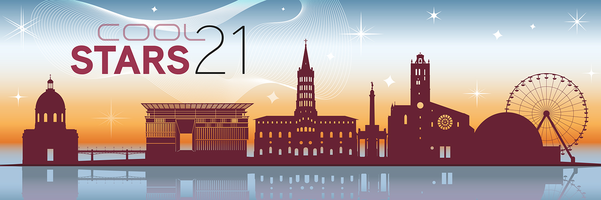
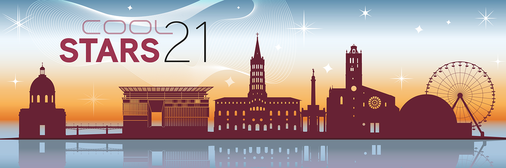
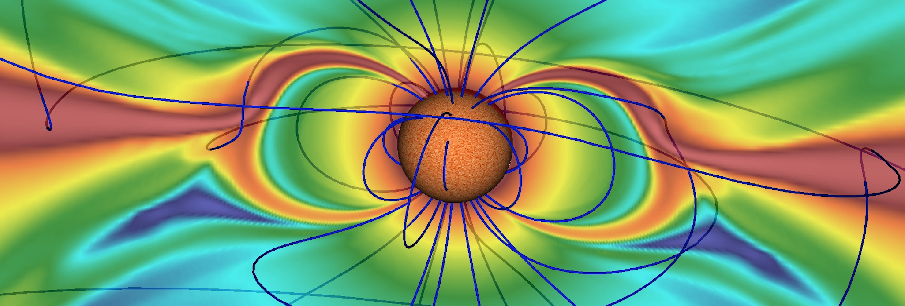
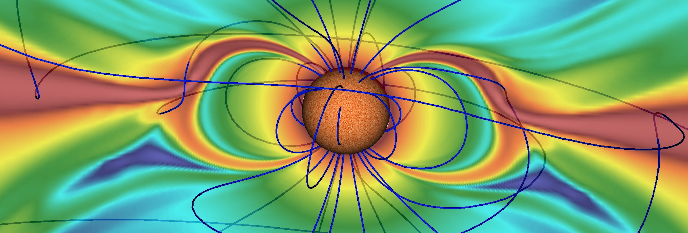

 



COOL STARS 21
4-9 July 2022, Toulouse, France
The "Cambridge Workshops of Cool Stars, Stellar Systems and the Sun" are held biennially and have evolved to be the premier conference series for cool star research.
The conference will be held in hybrid format. Registration and poster abstract submission are open!
- announcement of selected talks for plenary sessions: coming very soon!
- May 18th 2022 (23h59 CET): poster abstract submission deadline
- May 18th 2022 (23h59 CET): end of regular registration fees
- June 9th 2022 (23h59 CET): end of in-person registration
- June 27th 2022 (23h59 CET): opening of the hybrid platform
- June 30th 2022 (23h59 CET): end of virtual registration
Cool Stars 21 Covid Policies
Relevant information about the health control system at the French border will be found at this link. In particular,- for people vaccinated within the meaning of European regulations, proof of a complete vaccination schedule is currently sufficient to travel to France, regardless of the country of origin (no more tests is required upon departure).
- for unvaccinated people, it remains mandatory to present a negative test to travel to France, but the measures on arrival (test, isolation) are lifted when arriving from countries on the "green" list, which are characterized by a moderate circulation of the virus (a frequently updated list and map of countries in the green/orange/red lists will be found at the same link as above).
- when unvaccinated travelers come from a country on the "orange" list, a compelling reason justifying the need to come to France must be given. They may still be subject to a random test on arrival. Travelers who are tested positive will have to isolate themselves.
What is "Cool Stars"?
The next edition of the conference series "Cool Stars, Stellar Systems and the Sun" (CS 21) will be held in a hybrid format (details TBD) in Toulouse from July 4 to 9 2022, 42 years after its first edition in Cambridge (USA). This first edition was shortly followed that same year by a workshop on "Solar Phenomena in Stars and Stellar Systems" that took place in the southern French countryside, in a small village called Bonas. Both meetings are often considered as the starting point of this exceptionally successful conference series, where approximately 400 international experts in Low-Mass Stars, Solar Physics, and Exoplanets meet every other year to exchange ideas in a cross-disciplinary and friendly environment. Bonas is certainly not adapted anymore to host what became a major conference, but we will have CS 21 a stone throw away from there in Toulouse, where attendees will enjoy a certain lifestyle that - fortunately - has not change over the last forty years!
SOC
To contact the SOC or LOC write to: cs21@irap.omp.eu
- Silvia Alencar - Federal University of Minas Gerais
- Myriam Benisty - Institut de Planétologie et d'Astrophysique de Grenoble
- Jérôme Bouvier (SOC co-chair) - Institut de Planétologie et d'Astrophysique de Grenoble
- Allan Sacha Brun (SOC chair) - CEA Saclay
- Corinne Charbonnel - Geneva Observatory
- Marc DeRosa - Lockheed Martin Solar and Astrophysics Laboratory
- Andrea Dupree - Harvard-Smithsonian Center for Astrophysics
- Luca Fossati - Austrian Academy of Sciences
- Laurent Gizon - Max Planck Institute for Solar System Research
- Gregory Herczeg - KIAA / Peking University
- Lynne Hillenbrand - California Institute of Technology
- Miho Janvier - IAS / University of Paris-Sud
- Moira Jardine - University of Saint Andrews
- Elena Khomenko - Instituto de Astrofísica de Canarias
- Heidi Korhonen - European Southern Observatory
- Ágnes Kóspál - Konkoly Observatory
- Sean Matt - University of Exeter
- Pascal Petit (LOC chair) - Institut de Recherche en Astrophysique et Planétologie
- Sofia Randich - INAF / Arcetri Astrophysical Observatory
- Rachael Roettenbacher - Yale University
- Alexis Rouillard - Institut de Recherche en Astrophysique et Planétologie
- Klaus Strassmeier - Leibniz-Institut für Astrophysik Potsdam
- Takeru Suzuki - University of Tokyo
- Adriana Valio - Mackenzie Presbyterian University
- Scott Wolk - Harvard-Smithsonian Center for Astrophysics
LOC
To contact the SOC or LOC write to: cs21@irap.omp.eu
- Jérôme Ballot - Institut de Recherche en Astrophysique et Planétologie (IRAP)
- Clément Baruteau - IRAP
- Florian Debras - IRAP
- Sébastien Deheuvels - IRAP
- Pascal Fouqué - IRAP
- Dolorès Granat - IRAP
- Laurène Jouve - IRAP
- Soizic Peron - Insight Outside
- Pascal Petit (LOC chair) - IRAP
- Nicolas Poirier - IRAP
- Pascale Ramon - IRAP
- Victor Reville - IRAP
- Alexis Rouillard - IRAP
Organizing Institutions
Sponsors
Acknowledgements
- Artwork: CNES (service multimedia)
- Website template design by Veselka for andreasviklund.com
- Website development based on CS20's website source code on github
Previous Meetings
- CS 20.5 - online, March 2021
- CS 20 - Boston, USA, July 2018
- CS 19 - Uppsala, Sweden, June 2016
- CS 18 - Flagstaff, USA, June 2014
- CS 17 - Barcelona, Spain, June 2012
- CS 16 - Seattle, USA, August 2010
- CS 15 - St Andrews, UK, July 2008
- CS 14 - Pasadena, USA, November 2006
- CS 13 - Hamburg, Germany, July 2004
- CS 12 - Boulder, USA, July 2001
- CS 11 - Tenerife, Spain, October 1999
- CS 10 - Cambridge, USA, 1997
- CS 9 - Florence, Italy, 1995
- CS 8 - Athens, USA, 1993
- CS 7 - Tucson, USA, 1991
- CS 6 - Seattle, USA, 1989
- CS 5 - Boulder, USA, 1987
- CS 4 - Santa Fe, USA, 1985
- CS 3 - Cambridge, USA, 1983
- CS 2 - Cambridge, USA, 1981
- CS 1.5 - NATO Advanced Study Institute, Bonas, France, 25 Aug - 5 Sep 1980
- The original CS (later renamed CS 1) - Cambridge, USA, Jan 1980
Cool Stars 22
Cool Stars is a lot of fun to attend and also a lot of fun to host. If you and your institution would like to host Cool Stars 22 please fill out the following application by June 19, 2022. The location must be outside of Europe since we alternate continents in successive meetings. Your application will be reviewed by the SOC and you will be invited to discuss the meeting details with the SOC during Cool Stars 21. The selection will be announced at the Banquet on Thursday July 7, 2022. To apply, please email a pdf file with answers to the following questions to Allan Sacha Brun, chair of the CS21 SOC, at cs21@irap.omp.eu. In your application please discuss the following items:
- Host institution(s)
- Lead scientist(s)
- Contact details: name, address, email, fax; other supporting scientists
- Proposed dates of meeting
- Proposed site of meeting
- Meeting/facility considerations (hotel, conference center, observatory? Size of meeting?)
- Transportation considerations (airports, public transportation, travel time, ease of access etc.)
- Rooming/hotel considerations (range of facilities/cost)
- Experience of the host institution and lead scientists in running scientific meetings
- Potential sources of financial support in addition to registration fees
- Why should CS22 be held here?
- Projected science themes for CS22
- Anything else we should know?
Submissions received by June 19, 2022, will receive first consideration.